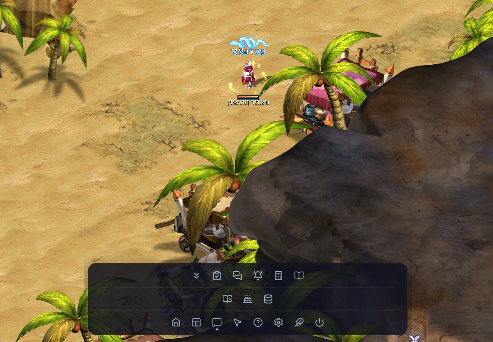

딱 2가지만 확인하면 바로 사용할 수 있습니다!
게임 내 옵션 확인과 서버 선택만으로 모든 기능이 자동 활성화됩니다.
1
게임 내 [채팅 로그] 저장 활성화 (필수)
필수
테일즈위버 인게임에서 단축키 O (환경설정) ➡️ [게임] 탭 ➡️ '채팅 로그'를 ON으로 켜주세요.
※ 채팅 로그가 켜져 있어야 경험치 미터기, 보스 알림, 득템 자동 기록이 작동합니다.
2
플레이 서버 선택 & 경로 확인
하이아칸
하이아칸 서버 (기본값)
네냐플
네냐플 서버
📁 채팅 로그 폴더
기본 경로가 정상 감지되었습니다.
준비 완료! ✨
추천 득템 세트가 적용되며, 과거 로그 복원은 설정에서 언제든 실행할 수 있습니다.
twOverlay 핵심 기능 요약
사냥과 레이드 등 플레이에 필요한 편의 기능을 실시간 모니터링합니다.
실시간 경험치(XP) 미터기
획득 경험치, 분당 효율(EPM), 잡은 몬스터 수를 실시간 계산하여 화면에 표시합니다.
모험일지 자동 기록
획득한 득템 로그를 실시간 감지하여 달력 및 시간별 타임라인에 자동 박제합니다.
필드 보스 출현 경고
보스 타임라인 기반 스폰 카드가 게임 화면 우측 및 알람 팝업으로 노출됩니다.
지능형 버프 타이머
도핑 버프 만료 전(1분, 10초, 5초) 화면 중앙 경고 카드로 시각 및 오디오 알림을 울립니다.
자석형 채팅 오버레이
게임 창에 자석처럼 연동되어 화면 가림 없이 투명하게 채팅과 외치기를 감시합니다.
일일/주간 숙제 체크
놓치기 쉬운 주요 콘텐츠 클리어 횟수를 한눈에 체크하고 완료 현황을 확인합니다.
테일즈위버 로그(ChatLog) 폴더 연동
경험치 계산, 보스 알림, 득템 기록을 위해 본인의 테일즈위버 로그 폴더 경로를 확인해주세요.
시작 마법사에서 설정하셨다면 무시하셔도 돼요! ✨
첫 번째 탭(시작 마법사)에서 로그 경로와 서버를 이미 확인하셨다면 자동으로 연동 완료된 상태입니다.

게임 오버레이 HUD 안내 & 단축키
환경설정의 [게임 오버레이]에서 마우스 드래그로 원하는 위치에 자유롭게 배치할 수 있습니다.
1. 스톱워치 (타이머 HUD)
CtrlShiftS
보스 레이드 및 인던 클리어 타임을 실시간 측정하는 초단위 타이머입니다.
2. 오늘의 요약 HUD
CtrlShiftY
오늘 획득 시드, ELSO 포인트, 득템 목록, 숙제 현황을 실시간 요약 모니터링합니다.
3. 실시간 경험치(XP) 미터기
CtrlShiftZ
사냥 중 획득 총 경험치, 분당 효율(EPM), 잡은 몬스터 수를 실시간 계산합니다. (초기화: Ctrl+Shift+X)
4. 어벤던로드 위젯
CtrlShiftA
어벤던로드 지역별 입장 횟수와 마정석 실시간 수익을 집계합니다. (10회 달성 시 축하 카드)
5. 지능형 버프 타이머 HUD
CtrlShiftB
도핑 버프 남은 시간을 뱃지로 표시하고, 만료 1분/10초/5초 전 중앙 경고 알람을 울립니다.
6. 발굴지 현황판
입장 시 자동 표시
일반·포탈·이공간 보상과 포탈 1~4 방문 여부를 한 판 동안 추적하고, 입장 30분 뒤 자동으로 닫힙니다.
전체화면 실행 시 오버레이 가려짐 대처법
게임 화면 위에 오버레이가 보이지 않을 때 아래 2가지 방법을 확인하세요.
Q. 왜 오버레이 창이 게임 화면 뒤로 숨나요?
테일즈위버가 **독점적 전체화면 모드**일 때는 윈도우 OS 특성상 오버레이 창이 게임 뒤로 가려집니다.
💡 추천 해결 방법 2가지
1. **[강력 권장]** 테일즈위버 인게임 옵션에서 화면을 '전체 창 모드(Borderless)' 또는 '창 모드'로 변경해 주세요.
2. 환경설정에서 배치를 독(Dock) 모드로 설정하여 단축키(Ctrl+Shift+D)로 끄고 켤 수 있습니다.
2. 환경설정에서 배치를 독(Dock) 모드로 설정하여 단축키(Ctrl+Shift+D)로 끄고 켤 수 있습니다.

알림 효과음 및 볼륨 변경
필드보스 출현, 지정 단어 감지 등 상황별 알람음을 원하는 사운드로 변경할 수 있습니다.
알림음 설정 팁
• 상황별 알림음 변경: 보스 알림, 단어 알림 설정 창 하단 드롭다운에서 원하는 사운드(예: `orb.mp3` 등)를 선택하고 테스트 재생할 수 있습니다.
• 마스터 볼륨 조절: 환경설정 ➡️ [소리 및 알림음 설정]에서 전체 알림 볼륨을 조절할 수 있습니다.
• 마스터 볼륨 조절: 환경설정 ➡️ [소리 및 알림음 설정]에서 전체 알림 볼륨을 조절할 수 있습니다.
과거 채팅 로그에서 누락 기록 복원
앱을 꺼둔 동안 쌓인 채팅 로그도 설정 화면에서 다시 분석할 수 있습니다.
이럴 때 사용하세요
앱을 늦게 실행했을 때
이미 저장된 로그에서 빠진 자동 기록을 찾아 복원합니다.
기록이 누락된 것 같을 때
설정 화면에 표시된 기간의 로그를 안전하게 다시 확인합니다.
진행 상태를 확인할 때
동기화 진행 여부와 처리 결과를 같은 화면에서 확인합니다.
알아두세요
• 테일즈위버의 원본 채팅 로그 파일이 PC에 남아 있어야 합니다.
• 로그 파일이 많으면 분석 중 프로그램이 일시적으로 느려질 수 있습니다. 진행이 끝날 때까지 잠시 기다려 주세요.
• 이 기능은 PC의 채팅 로그를 모험일지 등에 반영하는 기능이며, Google Drive 기기 간 동기화와는 별개입니다.
• 설정 → 채팅 & 로그 → 채팅 로그 연동에서 언제든 다시 실행할 수 있습니다.
• 로그 파일이 많으면 분석 중 프로그램이 일시적으로 느려질 수 있습니다. 진행이 끝날 때까지 잠시 기다려 주세요.
• 이 기능은 PC의 채팅 로그를 모험일지 등에 반영하는 기능이며, Google Drive 기기 간 동기화와는 별개입니다.
• 설정 → 채팅 & 로그 → 채팅 로그 연동에서 언제든 다시 실행할 수 있습니다.
단축키 요약
게임 중 단축키로 주요 창을 빠르게 끄고 켤 수 있습니다.
| 기능 안내 | 단축키 |
|---|---|
| 사이드바(주제어 창) 토글 | CtrlShiftD |
| 오버레이 마우스 클릭 투과 토글 | CtrlShiftT |
| 일일 보스 / 숙제 체크리스트 토글 | CtrlShiftC |
| 스톱워치 타이머 HUD 토글 | CtrlShiftS |
| 오늘의 요약 HUD 토글 | CtrlShiftY |
| 버프 타이머 HUD 토글 | CtrlShiftB |
| 어벤던로드 HUD 토글 | CtrlShiftA |
| 실시간 경험치(XP) HUD 토글 | CtrlShiftZ |
| 실시간 경험치(XP) 세션 측정치 초기화 | CtrlShiftX |
| 실시간 채팅 오버레이 토글 | CtrlShiftH |